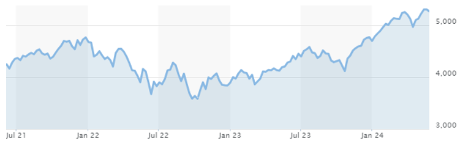

Exchange-traded Funds
Definition
An Exchange-Traded Fund (ETF) is a type of investment combined with a variety of investments. An ETF can invest in equities, bonds, or commodities. ETFs are good for long term investors because of their low cost, diversification, and how they have features related to stocks. Some examples are the S&P 500 and the Nasdaq 100.
What are ETFs
ETFs are listed and traded on the stock exchange just like any other stock. Investors buy and sell shares throughout the open stock market. The price of ETF shares fluctuates throughout the day based on supply and demand and the value of its pool of assets. By holding a pool of assets, it reduces risk compared to investing in individual stocks. ETF’s can break down into three types of ETFs including some that range from low to high risk and their level of risk depends on their investment mix. ETFs are cost effective because they have a lower expense ratio compared to mutual funds due to their passive management style.
Types of ETF’s include Index ETFs which track a specific index, like the S&P 500 or the Index 100. Sector and Industry ETFs Focus on specific sectors of industries like health care and technology. Commodity ETFs are invested in physical commodities like gold or oil. Bond ETFs are ETFs that are invested in bonds such as government and corporate bonds.
Guarantee (Risk)
The risk of the ETF will depend on the volatility of the Index the ETF is invested in. The value of an ETF can fluctuate with the market or specific assets they track. Sometime the ETF cannot be perfectly correlated with its assets due to fees, expenses, and other factors.
Return
When you eventually sell your units, you will make capital gains if the market price has increased or capital losses if the market price has decreased. ETFs may also pay your cash distributions form interest, dividends, or capital gains. You will usually have the possibility of reinvesting your distribution directly.
Conclusion
ETF offers a cost-effective, and diverse range of assets which makes it a valuable investment for long-term investing.

- The average yearly return of the S&P500 over the last 10 years is 12.58% (9.52% Adjusted for Inflation), as of the end of April 2024.